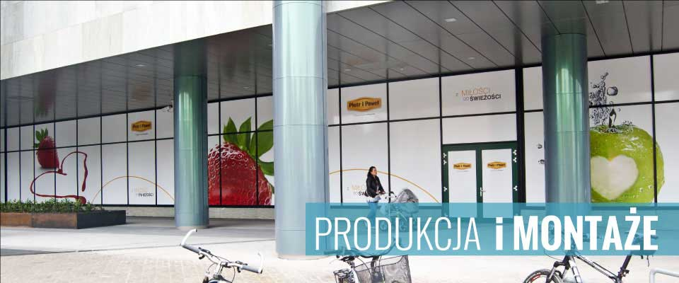

Oklejanie witryn
Estetyczne i skuteczne folie reklamowe

- 

Profesjonalne oklejanie witryn to jedna z najskuteczniejszych metod zwiększania widoczności firmy w przestrzeni miejskiej.
W instalprint.pl od lat wspieramy firmy z Wrocławia i całej Polski, oferując efektowne folie reklamowe na witryny sklepowe, biurowe i usługowe.
Dzięki starannie zaprojektowanym grafikom w foxmedia.com.pl, Twoja witryna staje się nie tylko nośnikiem informacji, ale również atrakcyjnym elementem identyfikacji wizualnej marki. To reklama działająca 24/7, przyciągająca wzrok i zwiększająca rozpoznawalność.
Witryna to pierwsze, co zauważa klient wchodząc do lokalu, dlatego warto, by była estetyczna i przyciągająca. instalprint.pl Oklejanie witryn oferuje:
Oferujemy kompleksowe oklejanie witryn od projektu w foxmedia.com.pl, przez produkcję folii, po montaż. W ofercie znajdziesz:
Nasze usługi w instalprint.pl kierujemy do firm i instytucji, które chcą zwiększyć widoczność i atrakcyjność swojej marki:
Współpraca z instalprint.pl przebiega sprawnie i kompleksowo:
1. Bezpłatna konsultacja i pomiar – dojazd do klienta we Wrocławiu, pomiar witryny, omówienie potrzeb.
2. Projekt graficzny – profesjonalne w foxmedia.com.pl, dopasowane do identyfikacji wizualnej marki.
3. Produkcja folii – druk lub wycinanie grafik na wysokiej jakości materiałach.
4. Montaż na miejscu – szybka i precyzyjna aplikacja folii na witrynie.
5. Serwis i odnowienia – zdejmowanie starych grafik oraz odświeżanie witryn sezonowo lub przy zmianie oferty.
Dostarczamy skuteczne i estetyczne rozwiązania reklamowe, które wyróżniają Twoją firmę na tle konkurencji. Działamy przede wszystkim we Wrocławiu i na Dolnym Śląsku, ale obsługujemy klientów z całej Polski.
instalprint.pl i zamów profesjonalne oklejanie witryn we Wrocławiu lub w innym mieście w Polsce.
Przygotujemy spersonalizowaną ofertę, wykonamy projekt i zajmiemy się kompleksową realizacją!
Copyright 2008-2024 by Instalprint | Wszystkie prawa zastrzeżone